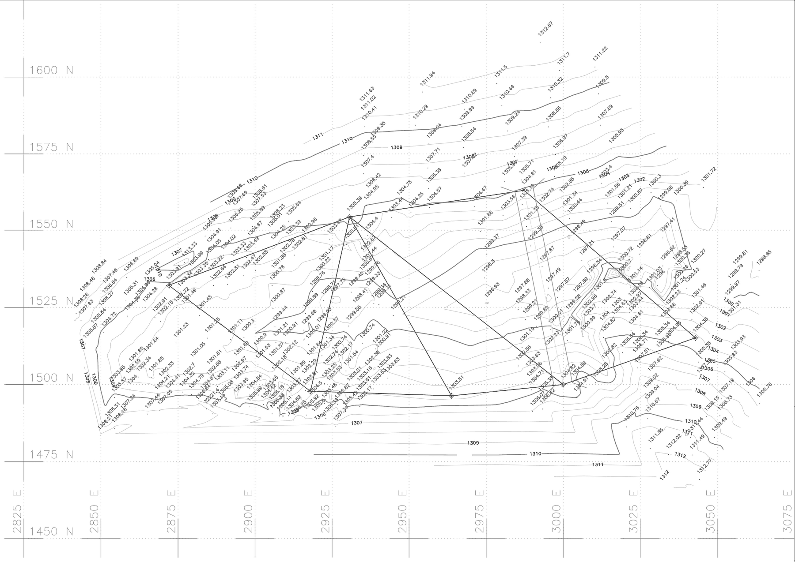
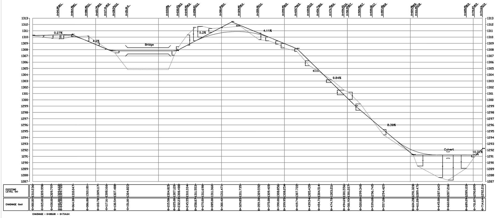

Topographic, bridge site and road alignment survey
This project came from the survey camp in my bachelor's program. We surveyed an area in the field and turned the data into a set of drawings in Civil 3D: a topographic map, a bridge site survey and a road alignment.
For the topographic map we ran a closed traverse with a total station, carried levels from the benchmark by fly leveling, and picked up the details around the stations. The map is at 1:500 with 1 m contours.

At the bridge site we chose the bridge axis across the river, measured the span by triangulation, and took a longitudinal section of the river upstream and downstream of the axis. We also took cross sections of the river and marked the high flood level on each one.
For the road we set out the centerline with horizontal curves, then took a longitudinal section and cross sections along it. In Civil 3D we drew the road profile with a design grade line, and the cross sections.
We all took turns at every task, so I worked on the instrument, the field book, the traverse calculations and the drawings.
Other figures

Example sheets from an earlier survey camp
The three sheets below are not my group's work. They are from an earlier survey camp report at Pulchowk Campus (2016) and are shown only as examples of the bridge site and road drawings in this exercise. My group made the same set of sheets.




